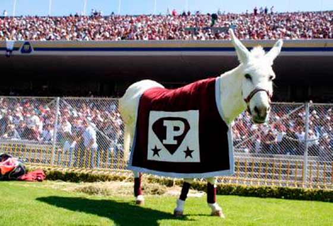

Hipervínculos
Hipervínculos
Hipervínculos externos
A una página de internet
Google
Pinterest
Unos juegos bonitos:3
A una página de internet en otra pestaña
Arte 7w7
A una página de internet en una imágen

A un archivo
Imagen de La Sirenita
Sipnosis de la Sirenita
Hipervinculos a correo
Hipervinculos internos
Menú
Misión
Visión
Escudo
Lema
Himno
Mascota
Porra
Instituto Politécnico Nacional
Misión Institucional
El Instituto Politécnico Nacional contribuye al desarrollo económico y social de la nación, a través de la formación integral de personas competentes; de la investigación, el desarrollo tecnológico y la innovación. Además tiene reconocimiento internacional por su calidad e impacto social.
Visión Institucional
Institución educativa incluyente de prestigio internacional, que con su comunidad contribuye al desarrollo científico, tecnológico e innovación con impacto social en el país.
Escudo
Fueron las inquietudes estudiantiles quienes tomaron la iniciativa para crear los símbolos que identificaran a la naciente institución politécnica. En los años 1944-1945 la Federación Nacional de Estudiantes Técnicos (FNET) lanzó una convocatoria para diseñar un escudo representativo de las escuelas que integraban el IPN. El primer lugar fue otorgado al alumno Armando López Fonseca quien con ayuda de su compañero Jorge Grajales, lograron que su diseño fuera el ganador. El escudo fue modificado en 1948 conservando sus elementos originales.
La Técnica al servicio de la patria
El lema era utilizado por algunos estudiantes desde antes de la creación del IPN, pero fue durante el Primer Congreso Nacional de Estudiantes Técnicos, realizado en la ciudad de Chihuahua en 1937, donde el estudiante Jesús Robles propuso utilizar la frase La Técnica al Servicio de una Patria Mejor. Años más tarde este lema fue modificado por “La Técnica al Servicio de la Patria”, el cual expresa los ideales del Politécnico.
Himno
Para obtener el Himno se convocó a un concurso abierto para su creación, pero no hubo eco al llamado. Luego de dos nuevas convocatorias, la poetisa Carmen de la Fuente resultó triunfadora del certamen y la Dirección General del Instituto le premió, el 15 de julio de 1961. Posteriormente, como la música aún no estaba elegida, se convocó a un certamen para poner música a la letra del himno del IPN, y resultó triunfador Armando González Domínguez, pianista reconocido y director de varias orquestas.
Mascota
En 1932 surgió la idea de integrar y estructurar un sistema de enseñanza técnica, proyecto en el cual participaron destacadamente el licenciado Narciso Bassols y los ingenieros Luis Enrique Erro y Carlos Vallejo Márquez.
Sus conceptos se cristalizaron en 1936, gracias a Juan de Dios Bátiz, entonces senador de la República y al general Lázaro Cárdenas del Río, Presidente Constitucional de los Estados Unidos Mexicanos, proponiendo llevar a cabo los postulados de la Revolución Mexicana en materia educativa; dando así nacimiento a una sólida casa de estudios: el Instituto Politécnico Nacional.
Sus fundadores concibieron al Politécnico como un motor de desarrollo y espacio para la igualdad; apoyando por una parte, el proceso de industrialización del país y, por la otra, brindando alternativas educativas a todos los sectores sociales, en especial a los menos favorecidos.

Porra
Uno de los deportes que creció junto con el Politécnico fue el fútbol americano. Desde sus inicios ha dejado profunda huella entre sus seguidores, quienes para apoyarlo han entonado diferentes porras: desde el chiquitibum hasta el huélum; sin embargo, es éste el que ha permanecido vigente a través de un grito de fiesta para celebrar y cerrar todos los eventos. El 16 de marzo de 1985 el autor de la porra, Víctor Chambón Burgoa, hizo el siguiente relato:
En 1937, al saber que había hecho algunas canciones que cantábamos los jugadores de fútbol americano del IPN, se acercó a mí un grupo de muchachos y muchachas que estaban iniciando el primer núcleo de directores de la porra del Politécnico. Ahora bien, en el Poli, la palabra para reunir a los estudiantes era -¡huelga, huelga!-. Basado en esto, sugerí que se utilizara la palabra 'huélum'. Además, decidimos que no se utilizara la palabra 'rah, rah', porque ya estaba en el 'Goya' y era una palabra porrística usada casi en todo Estados Unidos. Por otro lado, una muchacha hizo el comentario que el Poli era la 'gloria'. Otra persona insistía que la porra debía ser de mucho 'pegue' y como consecuencia natural, brotó la 'cachiporra'. Total, después de un par de horas de pláticas y discusiones, salió la que ustedes conocen".